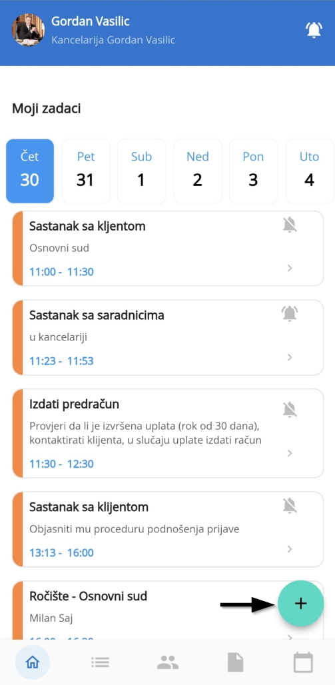
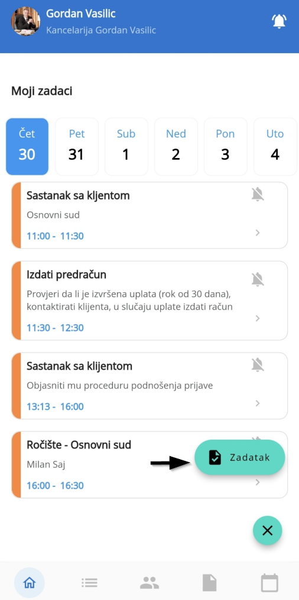
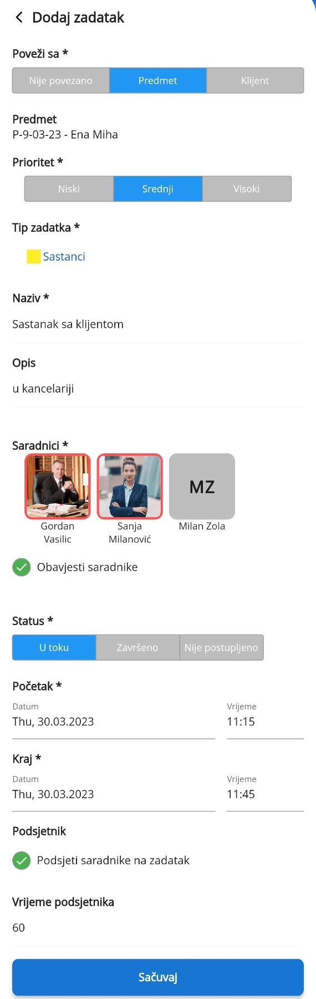

Prvi ekran pri pokretanju Legalistik mobilne aplikacije je Moji zadaci na kojem su prikazani svi zadaci sa statusom U toku.
Zadaci sa statusom Završeni i Nije postupljeno se ovde ne prikazuju, da bi se korisnici posvetili samo nadolazećim nezavršenim zadacima. Zadaci sa svim statusima su prikazani u Kalendaru.
Dodavanje novog zadatka #
Novi zadatak se dodaje klikom na plus ikonu u donjem desnom uglu a zatim na novi Zadatak:


Otvoriće vam se novi ekran za unos svih podataka vezanih za zadatak (kao i kod web verzije):

Možete povezati zadatak sa klijentom ili predmetom, definisati prioritet i izabrati saradnike kao i na web verziji. Saradnike birate klikom na njihovu sliku, nakon čega dobijaju crveni okvir koji potvrđuje da su izabrani. Kliknite na dugme Sačuvaj da bi se novi zadatak snimio i dodao u listu zadataka.